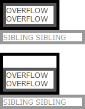
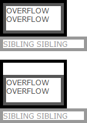
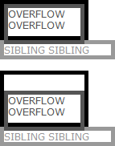
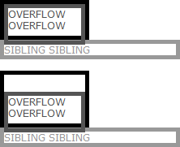
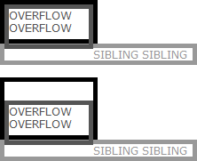
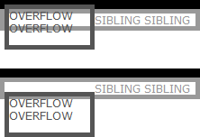
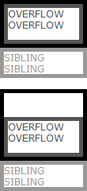
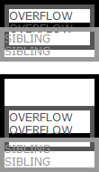
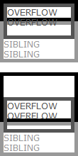

根据 W3C CSS2.1 规范中的描述，浮动元素所生成的框会脱离文本流，在其之前或者之后创建的非定位的框垂直排列，就好像浮动框不存在。但是，紧挨着该浮动框创建的行框将会缩短而给浮动框的 margin-box 留以空间。如果被缩短的行框太小而无法容纳任何更多的内容，则其会被迫向下移动直到可以放下或者不再有浮动存在。在浮动框之前的当前行的任何内容将重新排列（reflow）到浮动框另一边的第一个可用的行上。
关于 'float' 特性的更多信息，请参考 CSS2.1 规范 9.5 Float。
IE6 IE7 IE8(Q) 中溢出容器的浮动元素导致容器兄弟元素文本定位错误。
若由于某些原因导致了容器内的浮动元素溢出容器，在 IE7(S)中 可能导致内容重叠现象，而在 IE6 IE7(Q) IE8(Q) 中的布局也会和其他标准浏览器稍有不同。
| IE6 IE7(Q) IE8(Q) | |
|---|---|
| IE7(S) |
分析以下代码：
<style> * { margin:0; padding:0; font:12px Verdana; } .overflow { float:left; width:90px;
height:40px; border:5px solid #555; color:#555; } .sibling { border:5px solid #999; color:#999; }
</style> <div style="width:100px; height:40px; border:5px solid black"> <div
class="overflow">OVERFLOW OVERFLOW</div> </div> <div class="sibling">SIBLING
SIBLING</div> <br /> <div style="width:100px; height:60px; border:5px solid black">
<div class="overflow" style="margin-top:20px;">OVERFLOW OVERFLOW</div> </div> <div
class="sibling">SIBLING SIBLING</div>
上面代码中包含两组，第一组容器【container】内包含一个浮动元素【overflow】，由于容器与浮动元素高度的设置导致浮动元素的底边框刚好覆盖容器的底边框，容器有一个兄弟元素【sibling】；第二组容器内同样包含一个浮动元素，容器的高度足够容纳浮动元素，但是浮动元素设置了 margin-top:20px导致其底边框也刚好覆盖容器的底边框，容器同样有一个兄弟元素。
在各浏览器中的运行效果如下：
| IE6(Q) IE7(Q) IE8(Q) | IE6(S) | IE7(S) IE8(S) Firefox Chrome Safari Opera |
|---|---|---|
|  |  |  |
这里，在 IE6(Q) IE7(Q) IE8(Q) 中由于此时对于普通块级元素其 'width' 和 'height' 作用于元素的 border-box 而不是 W3C 规范中的 content-box 导致元素尺寸差异；同时 IE6 IE7(Q) IE8(Q) 中有子元素可能会撑大容器的 Bug。
所以下面将不再对这两个问题及相关浏览器进行详细讨论。主要讨论 IE7(S) IE8(S) 及其他浏览器之间的差异。
<style> * { margin:0; padding:0; font:12px Verdana; } .overflow { float:left; width:90px;
height:40px; border:5px solid #555; color:#555; } .sibling { border:5px solid #999; color:#999; }
</style> <div style="width:100px; height:39px; border:5px solid black"> <div
class="overflow">OVERFLOW OVERFLOW</div> </div> <div class="sibling">SIBLING
SIBLING</div> <br /> <div style="width:100px; height:60px; border:5px solid black">
<div class="overflow" style="margin-top:21px;">OVERFLOW OVERFLOW</div> </div>
<div class="sibling">SIBLING SIBLING</div>
第一组的容器只针对第一段测试代码将其高度减小了 1px；第二组的浮动元素只针对第一段测试代码将其 'margin-top' 增大了 1px。此时两组中浮动子元素的底部均刚好溢出容器。
在各浏览器中的运行效果如下：
| IE7(S) | IE8(S) Firefox Chrome Safari Opera |
|---|---|
|  |  |
可以看到，浮动子元素底部溢出了容器。
而在 IE7(S) 中，设置了高度的容器触发了 hasLayout，此时浏览器认为浮动被清除，却没有考虑浮动元素溢出容器的部分对布局的影响，所以【sibling】中的文字显示在其所在行框的原始位置。
在 IE8(S) 及其他浏览器中，设置高度并不能触发 hasLayout
特性，但是浮动元素由于某种原因还是溢出了容器，浮动并没有完全清除。在渲染【sibling】的时候，虽然其框位于容器的正下方，且部分被溢出的浮动元素遮盖，但是根据 W3C
对浮动元素的规定，【sibling】中的行框由于部分覆盖在其上的浮动元素而缩短，这导致【sibling】中的文本显示在浮动元素溢出部分的右侧，此时【sibling】仍体现出“环绕”的特征。
若取消容器的 'width' 和 'height'，即在 IE6 IE7 IE8(Q) 中不触发 hasLayout，可以看到所有浏览器中效果均一致：
| 所有浏览器 |
|---|
|  |
而若由于某些原因导致了容器内的浮动元素溢出容器，在 IE7(S) 中可能导致内容重叠现象：
<style> * { margin:0; padding:0; font:12px Verdana; } .overflow { float:left; width:90px;
height:40px; border:5px solid #555; color:#555; } .sibling { border:5px solid #999; color:#999;
width:100px; } </style> <div style="width:100px; height:20px; border:5px solid black">
<div class="overflow">OVERFLOW OVERFLOW</div> </div> <div
class="sibling">SIBLING SIBLING</div> <br /> <div style="width:100px; height:60px;
border:5px solid black"> <div class="overflow" style="margin-top:30px;">OVERFLOW
OVERFLOW</div> </div> <div class="sibling">SIBLING SIBLING</div>
在各浏览器中的运行效果如下：
| IE6 IE7(Q) IE8(Q) | IE7(S) | IE8(S) Firefox Chrome Safari Opera |
|---|---|---|
|  |  |  |
IE6 IE7(Q) IE8(Q) 中，由于子元素可能会撑大容器的 Bug 造成即使此时浏览器触发了 hasLayout，但并没有造成【sibling】文本内容与浮动元素溢出部分重叠覆盖。
IE7(S) 中，修复了上面的 Bug，但是此时 hasLayout 特性正好导致了覆盖问题。
及时地为容器清除浮动，并且确保浮动元素没有溢出容器。
| 操作系统版本: | Windows 7 Ultimate build 7600 |
|---|---|
| 浏览器版本: |
IE6
IE7 IE8 Firefox 3.6.3 Chrome 5.0.375.7 dev Safari 4.0.5 Opera 10.51 |
| 测试页面: | IE7_float_overflow.html |
| 本文更新时间: | 2010-07-20 |
float overflow 溢出 浮动 文本 content 重叠 overlap